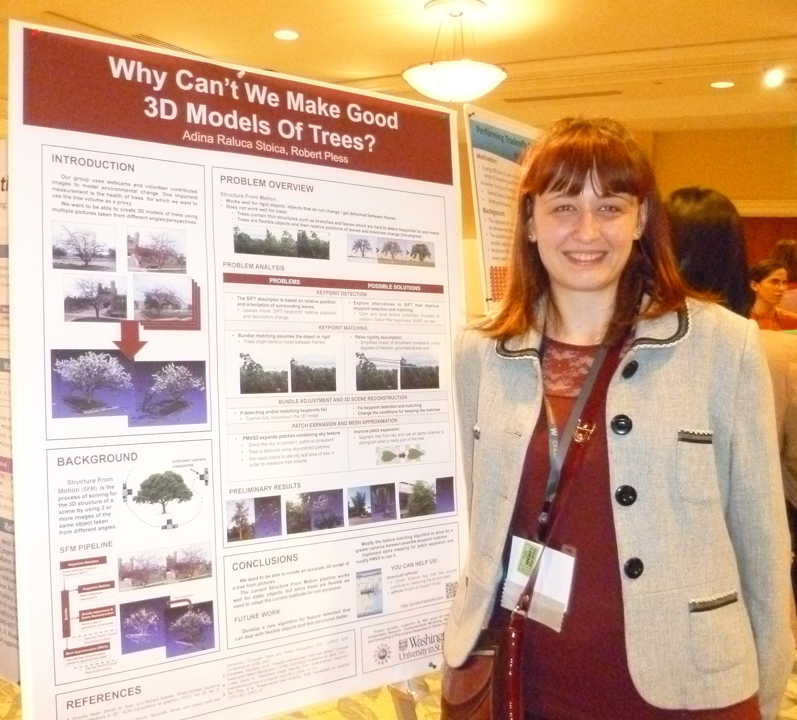

Research
In this section you will see some of the research projects that I worked on in undergrad, REUs, grad school and internships. Since coding and research are quite different, and since I have a few projects in each category, I decided to split research in its separate section.
I have been doing research since my freshman year of college both at Bard College in the
ASC Lab with Professor Robert McGrail, and through
REU programs in the
Computational Physiology Lab at the University of Houston with Professor Ioannis Pavlidis, and in the
Virtual Environments Group at Clemson University with Professor Larry Hodges.
In graduate school, I was part of the
Media and Machines Lab, where I worked in the Computer Vision lab with Professor Robert Pless. In the summer of 2014, I interned at
Mitsubishi Electric Research Laboratories in Boston, where I worked in the Spatial Analysis group with Dr. Srikumar Ramalingam and Dr. Yuichi Taguchi.
You can read about my research projects by following the links below (also accessible from the drop-down menu):